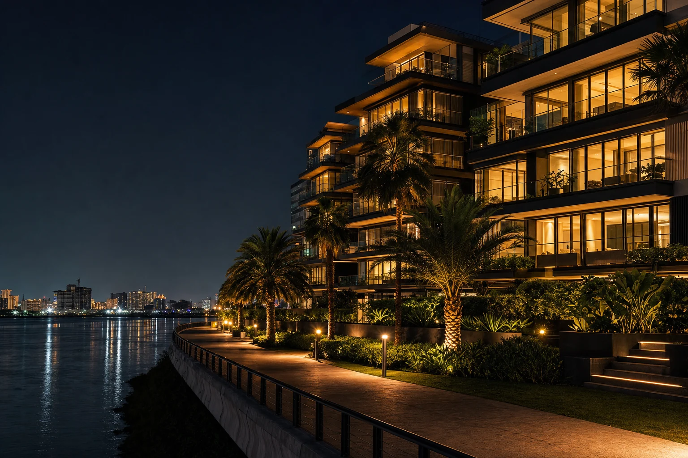
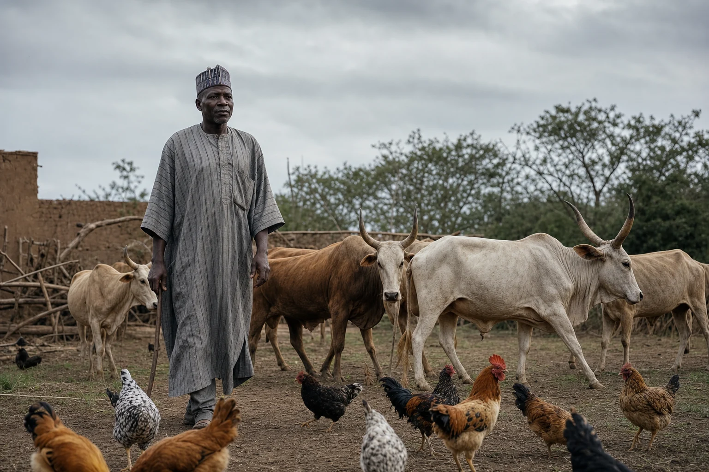
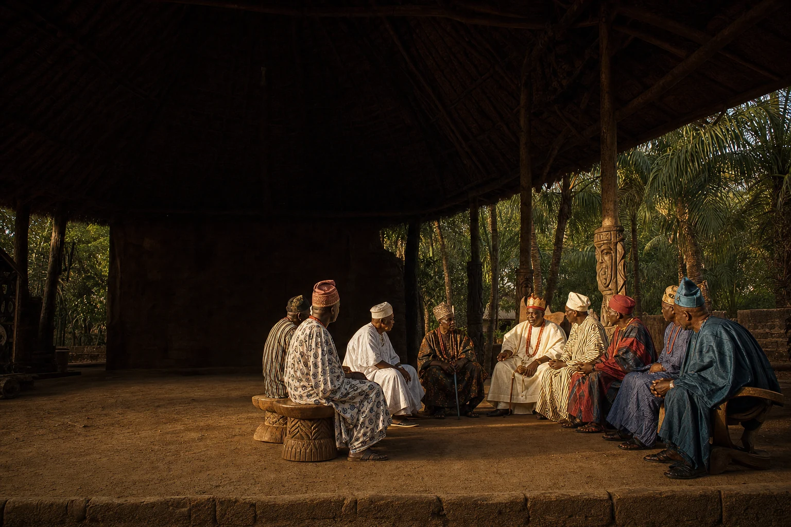
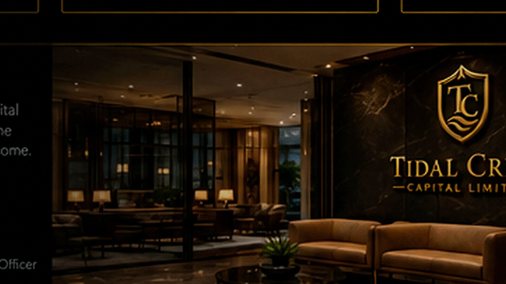

Every legacy
begins somewhere.
Ours begins with land. Not because land is the limit of our ambition, but because it is a place to begin building something useful. From that beginning, we envision an enterprise rooted in stewardship, productivity and lasting opportunity.
The land is where our story begins.
Every meaningful enterprise starts with a decision to build. For Tidal Crest, land gives that decision a tangible beginning and a responsibility to think beyond the next harvest, project or year.
Our ambition reaches beyond agriculture. We are creating the foundations for businesses that can stand on their own, connect with one another and create value over time.
Many possibilities. One commitment to build well.
Three established companies form our commercial foundation. Alongside them are future capabilities we intend to explore as opportunities and practical needs emerge. Select any business to discover its story and current status.

Tidal Crest Developments
Land ownership, real estate and purposeful development.
Explore Tidal Crest Developments →
Tidal Crest Agro
Crops, orchards and productive land.
Explore Tidal Crest Agro →
Tidal Crest Farms
Follow the Ilorin estate from land to legacy.
Explore Tidal Crest Farms →Foods
Future food products built around useful everyday needs.
Explore Foods →Processing & Value Addition
Exploring food processing and added value from production.
Explore Processing & Value Addition →Supply Chain
Connecting inputs, producers and markets.
Explore Supply Chain →Logistics & Cold Chain
Exploring transport, distribution and temperature-sensitive handling.
Explore Logistics & Cold Chain →Technology
Practical tools for better information and decisions.
Explore Technology →Energy & Infrastructure
Planning the utilities and enabling systems behind enterprise.
Explore Energy & Infrastructure →
Tidal Crest Media
Documenting the enterprise and sharing the journey.
Explore Tidal Crest Media →Hospitality
Future opportunities to welcome visitors and connect people with place.
Explore Hospitality →Follow the beginning as it unfolds.
The Ilorin farm estate offers a real opportunity to document the work of building: the research, the questions, the design, the challenges and eventually the results. The journey is at its beginning, and we intend to tell it accurately.
Explore the farm documentary →Build with purpose. Steward what matters.
The measure of an enterprise is more than what it owns. From land and agriculture to foods, processing, distribution and markets, our purpose is to build useful connections that can create opportunities for communities and endure for generations.
Tidal Crest Empowerment Foundation is a separate philanthropic institution within the wider family-enterprise vision, not a commercial subsidiary.
Explore the Foundation →